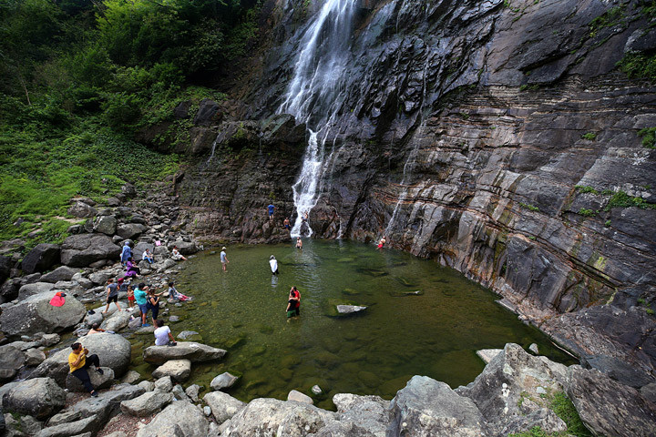

Karagöl


Artvin'e bağlı, doğa ile iç içe bir cennet olan Karagöl, yeşil ormanlar ve sakin göletiyle yürüyüş ve kamp yapmayı sevenler için ideal bir yerdir.
Mençuna Şelalesi

Borçka ilçesinde yer alan Mençuna Şelalesi, ormanın derinliklerine gizlenmiş olup, etkileyici görüntüsüyle doğa severler için harika bir kaçış noktasıdır.